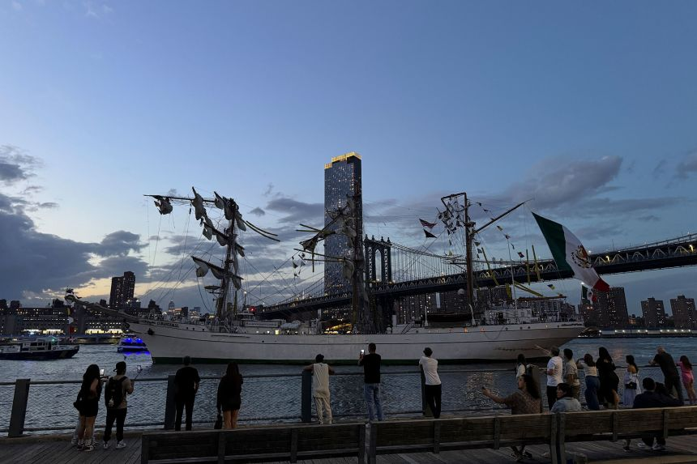
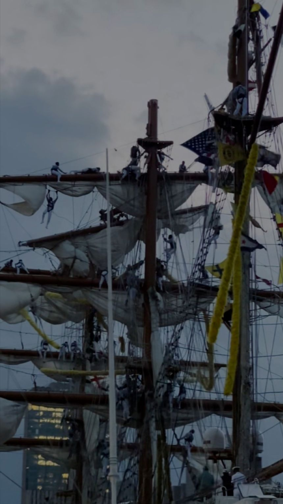
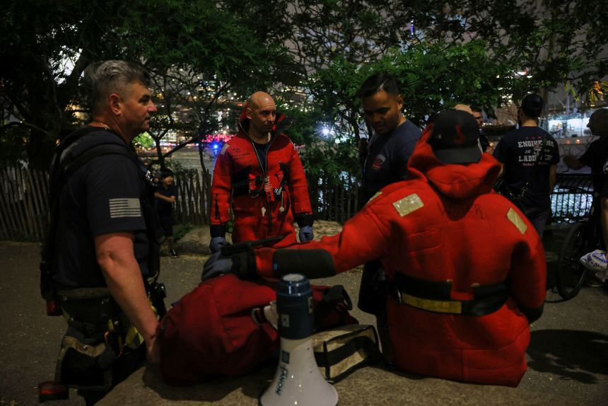

At least two people were killed and more than a dozen others injured when a Mexican Navy training ship on a goodwill tour struck the underside of the Brooklyn Bridge in New York. The ship, called the Cuauhtémoc, lost power and its mast hit the bridge, causing tragic casualties. The bridge was briefly closed but reopened after inspection. The incident is under investigation by the National Transportation Safety Board.
The Cuauhtémoc, a steel-hulled, three-masted barque, is used to train cadets at Mexico’s naval academy and is a diplomatic emblem of Mexico’s maritime tradition. The ship was visiting New York as part of a global goodwill tour.
Latest News Highlights
Brooklyn Bridge Incident: Mexican Navy Ship Strikes Bridge, 2 Dead
Read full story on CNN



Russia-Ukraine Talks: Diplomacy Stalls, Tensions Remain
Read full story on CNN
The first direct talks between Ukraine and Russia in years failed to yield significant progress, with only a prisoner swap and vague promises of further discussions. European leaders and the US continue to pressure Russia for a ceasefire, but Moscow remains unyielding. The diplomatic stalemate continues as both sides prepare for further conflict and international scrutiny intensifies.
Romania’s Presidential Election: Nationalist vs. Centrist in Run-Off
Read full story on CNN
Romania faces a pivotal presidential run-off between hard-right nationalist George Simion and centrist mayor Nicusor Dan. The election, held after the original was annulled, could have major consequences for Romania’s relationship with the EU and its stance on Ukraine. Simion’s campaign has focused on nationalism and anti-EU rhetoric, while Dan pledges to fight corruption and keep Romania on a pro-Western path. The outcome is expected to impact both domestic and European politics.
More Breaking News & Analysis
For more details and the latest updates, visit the CNN homepage.